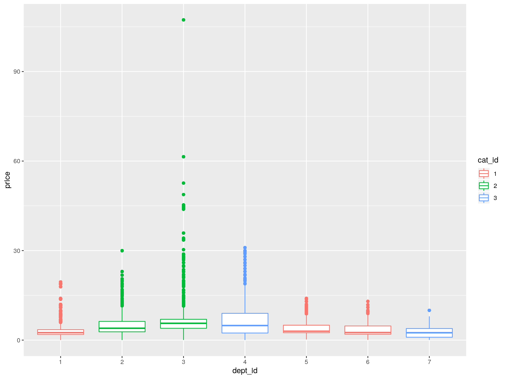

Prices by department and category
No plotly for this; it’s quite slow.
## Warning: Removed 12299413 rows containing non-finite values (stat_boxplot).

LS0tCnRpdGxlOiAnRURBOiBQcmljZXMnCmF1dGhvcjogIkFudG9ueSIKZGF0ZTogIjIwMjAtMDMtMjkiCi0tLQoKYGBge3Igc2V0dXAsIGluY2x1ZGU9RkFMU0V9CnNjYWxlID0gMi41CmtuaXRyOjpvcHRzX2NodW5rJHNldCgKICBlY2hvID0gVFJVRSwgY2FjaGUgPSBUUlVFLAogIGZpZy5hbGlnbiA9ICJjZW50cmUiLAogIGZpZy53aWR0aCA9IDQqc2NhbGUsCiAgZmlnLmhlaWdodCA9IDMqc2NhbGUKKQoKIyBzdWItc2FtcGxlIGl0ZW1zIGJhc2VkIG9uIGZyZXF1ZW5jeQojIG5vdCB1c2VkIGJ1dCBjb2RlIGtlcHQgaGVyZSBmb3Igbm93CiMgc2V0LnNlZWQoMjU0MjU4OSkKIyBja19pdGVtcyA9CiMgICBpdGVtcyAlPiUKIyAgIGxhenlfZHQoKSAlPiUKIyAgIGNvdW50KGRlcHRfaWQsIGNhdF9pZCkgJT4lCiMgICByZW5hbWUoRnJlcSA9IG4pICU+JQojICAgbWVyZ2UoaXRlbXMsIGFsbC55ID0gVFJVRSkgJT4lCiMgICBzYW1wbGVfbig2LCByZXBsYWNlID0gVFJVRSwgd2VpZ2h0ID0gRnJlcSkgJT4lCiMgICBwdWxsKGl0ZW1faWQpCgpgYGAKCiMgTG9hZCBkYXRhCgpgYGB7ciBkYXRhfQpyZWRvX2xvYWQoCiAgc3RvcmVzID0gaGVyZSgiZGF0YS9zdG9yZXMucmRzIiksCiAgaXRlbXMgID0gaGVyZSgiZGF0YS9pdGVtcy5yZHMiKSwKICBwcmljZXMgPSBoZXJlKCJkYXRhL3ByaWNlcy5yZHMiKQopCmBgYAoKIyBQcmljZXMgYnkgZGVwYXJ0bWVudCBhbmQgY2F0ZWdvcnkKCk5vIHBsb3RseSBmb3IgdGhpczsgaXQncyBxdWl0ZSBzbG93LgoKYGBge3IgcHJpY2VzX2J5X2RlcHR9CnByaWNlcyAlPiUKICBtZXJnZSgKICAgIGl0ZW1zWyxjKCJpdGVtX2lkIiwgImRlcHRfaWQiLCAiY2F0X2lkIildLAogICAgYnkgPSAiaXRlbV9pZCIsCiAgICBhbGwueCA9IFRSVUUKICApICU+JQogIHBsb3RmKHByaWNlIH4gZGVwdF9pZCArIGNhdF9pZCwgZ2VvbT1nZW9tX2JveHBsb3QpCmBgYAo=